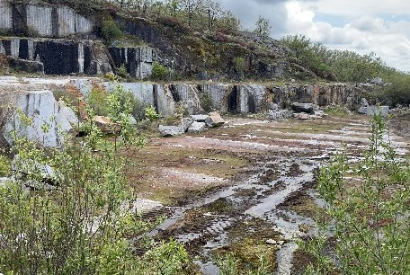

Canteras
Vicanpas dispone de tres canteras de granito en la provincia de Caceres en España.
Nuestra cantera de Azul Extremadura se encuentra en la localida de Benquerencia de Cáceres y las otras dos (Fantasia Plateado y Azul Zafiro) se encuentran en la localidad de Piornal.

Cantera Fantasia Plateado
Esta cantera está en el pueblo de Piornal, esta cantera tiene grandes reservas de materiales y una larga vida util.
De aqui salen dos materiales:
Fantasia Plateado
Fantasia Plateado Oscuro
Son dos materiales movimentados tipo Brasileños unicos en España y muy apropiados para decoracion.

Cantera Azul Extremadura
Esta cantera esta situada en el pueblo de Benquerencia en la provincia de Caceres, es una cantera pequeña pero con grandes reservas, de ella se saca el granito Azul Extremadura que es muy apreciado para combinar con otros colores y para obra publica y muy demandado en paises europeos como Francia, Alemania, Polonia, etc.

Cantera Azul Zafiro
Cantera situada en el pueblo de Piornal, España de ella se extrae los granitos:
Azul Zafiro
Gris fantasia
Cantera parada en la actualidad por tener existencias listas para cargar. Se puede reactivar en cualquier momento al tener todos los permisos en regla
Proximamente
Nuestro equipo está siempre abierto al estudio de nuevas canteras y colaboraciones con otras canteras para poner en valor las que estén paradas.
Si desea que colaboremos ruego contacte con nosotros.
Canteras propias
Aqui encontrará la información de nuestras canteras.